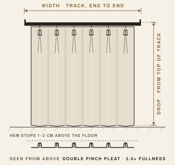

How much cloth does your window need?
Choose the heading, give us the width of the track and the drop, and see the yardage we would cut, whether your cloth makes that drop in one piece, and what it costs delivered to the USA with the duty paid. The arithmetic is the one we use for the quote.

Width: the track end to end, not the window. Drop: from the reference point in the drawing to where the curtain should stop.
4 · The cloth optionalTwo numbers, taken at the real mounting height.
Use a steel tape rather than a fabric one, and measure twice. Send centimetres or inches — just tell us which. Width first, then drop.
Width
The full length of the track or pole you want covered, end to end — not the window. For curtains that clear the glass when open, run the pole 15–25 cm past the frame on each side; that extra length counts.
Drop
From the top of the track — or the bottom of the rings if your pinch pleats hang from a pole — straight down to where the curtain stops. Grommet, tab-top and rod-pocket curtains sit on the pole itself: measure from the top of the pole.
Where it stops
The sill, just below the sill, or the floor. For a floor-length pair you open every day, stop 1–2 cm short so the hem does not drag.
If the wall is not level
Measure in two or three places and send us the largest figure. Unsure about a number? Send the figure you have plus a photograph — we would rather talk it through than re-cut.
The heading decides the fullness, and where the drop is measured from.
These are the ratios we sew each heading at. You can choose more or less in the calculator — under about 1.5× a curtain looks thin when it is closed. The bench explains each heading in full.
| Heading | Fullness | Hangs from | Measure the drop from | |
|---|---|---|---|---|
| Double pinch pleat | 2.0× | Track | Top of the track | Calculate |
| Triple pinch pleat | 2.5× | Track | Top of the track | Calculate |
| Inverted box pleat | 2.0× | Track | Top of the track | Calculate |
| Pencil pleat | 2.0× | Track or pole | Top of the track | Calculate |
| Ripple fold | 2.0× | Ripple-fold track | Top of the track | Calculate |
| Grommet / eyelet | 1.8× | Pole | Top of the pole | Calculate |
| Rod pocket | 2.0× | Pole | Top of the pole | Calculate |
| Tab top | 1.8× | Pole | Top of the pole | Calculate |
| Flat panel | 1.0× | Track | Top of the track | Calculate |
Five we answer most weeks.
How much fabric do I need for curtains?
Multiply the width of the track or pole by the fullness, then add 20 cm (about 8 in) of side hems for each panel. A 96 inch track at 2× fullness takes 192 inches of cloth across the window; as a pair, that is about 5.8 yards cut from the roll.
Do I measure the window or the track?
The track or pole, end to end — not the window. If you want the curtains to clear the glass when open, the pole should run 15–25 cm past the frame on each side, and that extra length counts.
Where do I measure the drop from?
From the top of the track, or from the bottom of the rings if your pinch pleats hang from a pole. For grommet, tab-top and rod-pocket curtains, which sit on the pole itself, measure from the top of the pole. Stop 1–2 cm above the floor for a pair you open every day.
Why does a pair not need twice the fabric?
Fullness is the cloth for the whole track. A pair splits that between two panels; the only extra is the side hems on the second panel.
How tall can a curtain be without a seam?
Our cloth is woven 290–360 cm wide and turned on its side, so a curtain of any width is one piece. The drop can be as tall as the cloth is wide, less 20 cm for the heading and hem — 270–340 cm (106–134 in) depending on the fabric.
More in the journal: how wide curtains should be, how long they should be and why extra-wide fabric makes a better curtain.